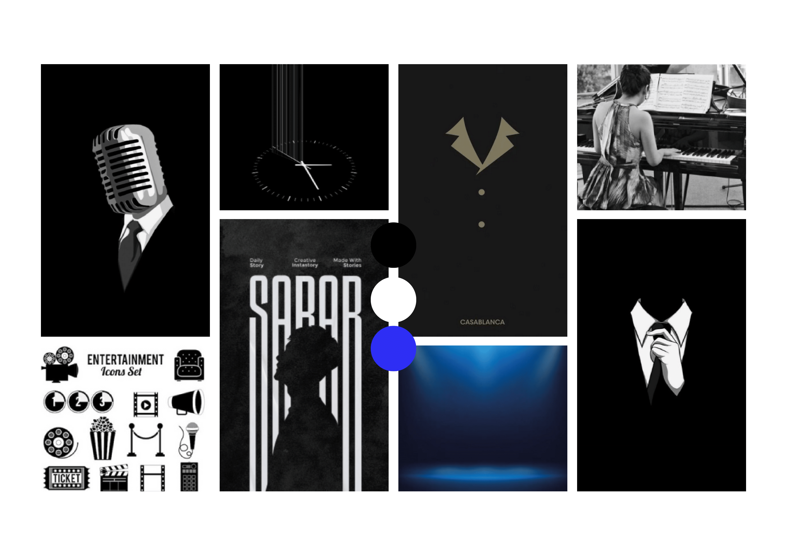

FRAMMI

Contexte
Le FRAMMI est le festival audiovisuel organisé chaque année par les étudiants du BUT MMI de Chambéry, à destination des élèves comme du grand public. Pour cette 16ème édition, j'ai rejoint l'organisation avec pour mission de porter la direction artistique et la communication de l'événement. Concrètement, mon rôle a couvert plusieurs volets : la recherche de sponsors pour financer le festival, la création de l'identité visuelle et des supports de communication, ainsi que l'animation du compte Instagram (@frammi-awards) pour faire vivre l'événement avant, pendant et après l'édition. L'un des principaux défis a été de coordonner plusieurs pôles en parallèle — communication, partenariats, logistique — tout en respectant un calendrier serré, avec une équipe entièrement étudiante. Cette expérience m'a permis de développer une vraie polyvalence : passer du graphisme à la négociation avec des partenaires, puis à la gestion de planning, parfois dans la même journée. Le festival a réuni plus de 200 spectateurs et a permis de récompenser les meilleures productions audiovisuelles de l'année dans plusieurs catégories. Au-delà du résultat, c'est l'expérience de gestion de projet de A à Z — de la recherche de financement jusqu'au jour J — qui a été la plus formatrice.
Compétences mobilisées
- Recherche et démarchage de sponsors
- Communication de projet et gestion du compte Instagram
- Régie vidéo en direct le jour de l'événement
Le projet en détail
Le FRAMMI Awards est un festival organisé chaque année par un groupe de 6 étudiants MMI de Chambéry, en partenariat avec l'IUT et l'Université Savoie Mont Blanc. Cette 16ème édition a réuni environ 450 étudiants MMI (Chambéry et Grenoble), la communauté des anciens élèves, ainsi que 200 spectateurs fidèles venus le jour J à la Salle Jean Renoir de Chambéry. Voir le compte Instagram @frammi_awards (story à la une de la 16ème édition disponible, ainsi que les anciens posts). Le moodboard de direction artistique :  Le dossier de partenariat utilisé pour la recherche de sponsors :